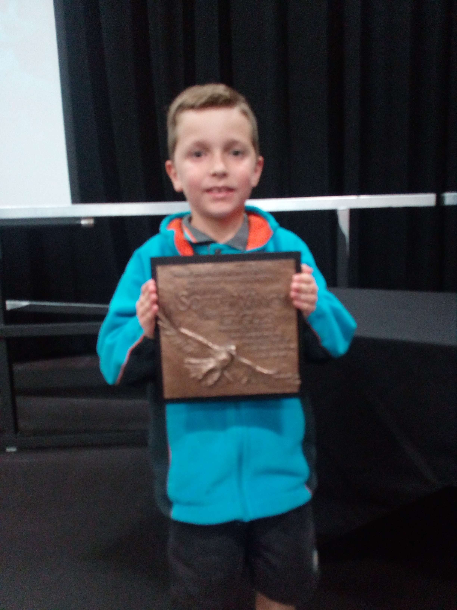
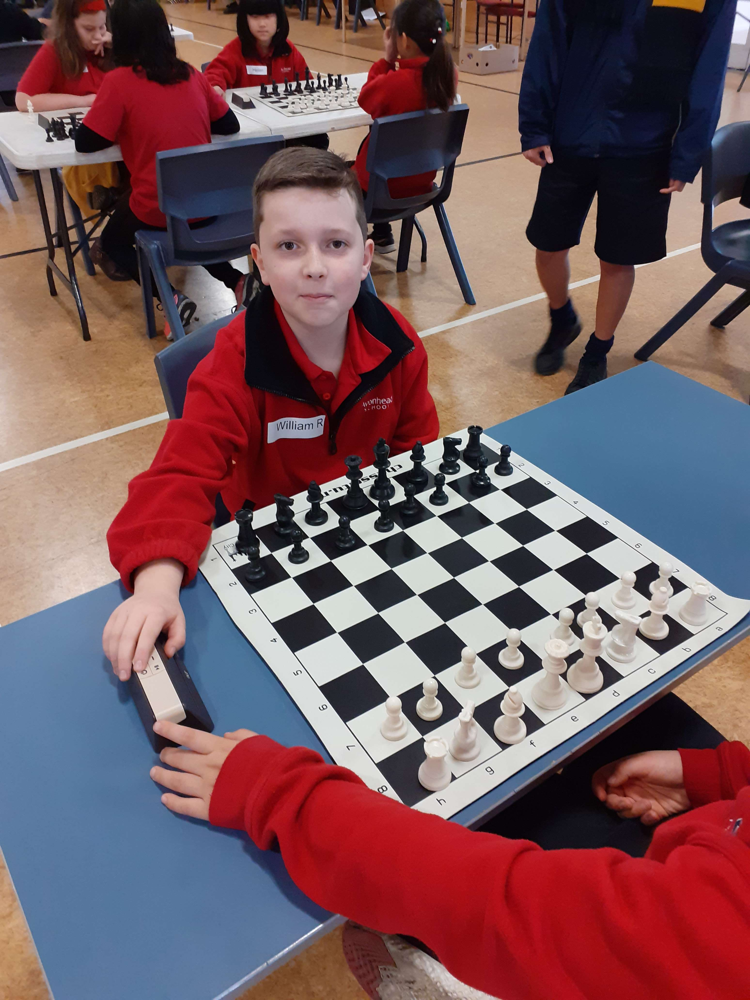
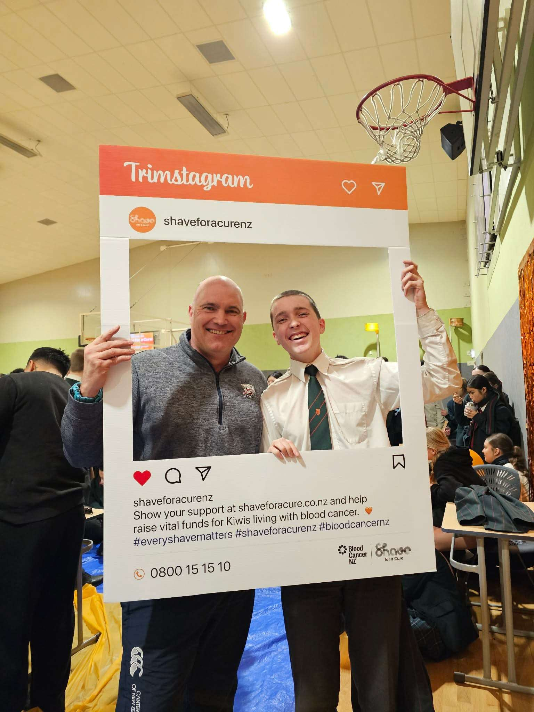
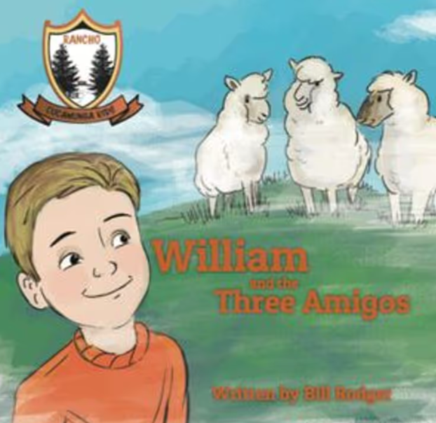

Who I am:
A lot of you might know me but if you don't, I'm William. I'm currently 15, sitting younger than most of my friends. I arrived at Middleton Grange in year 7 and met a lot of really cool people along the years since. Middleton wasn't my first school, but instead it's my third following my years and Rollestion Christian School, and then Avonhead School.



While I don't really do either anymore, In the past I have competed for Middleton in a couple chess tournaments, as well as Middleton's B team for Table Tennis at the Koru games in Year 8 coming second overall losing the the other Middleton team.

A fun fact I would also share is I have a fictional book writen about me by my Grandfather, William (commonly refered to as Bill) Rodger, which were a limited time collectable at New World